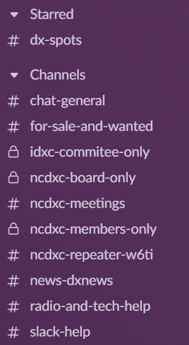

|
Greetings all DXers, We now have an NCDXC Slack workspace available. As you may have noticed, many clubs have started using this and they are rather active, especially with newer hams. The NCDXC Slack is only 2 days old, so still
growing, etc. Feedback, ideas and comments are welcome. Please send them to me directly so we don’t flood members emails.
If you would like to check it out/join, drop me a line and I will send an invite.
If not familiar with it, yesterday I have created a video on how to use it (and others like it) and you can view it here:
https://youtu.be/neCIgRDR7pU I highly recommend watching this if you are not familiar with Slack. Many of use it for work as well or for other amateur radio clubs. I have several ham radio related workspaces on it which I find super useful.
This is not a replacement for anything, just an additional club resource for those who prefer it. Keeps the email box clean and it is super fast, unlike email. Not to mention organized!
There are some restricted channels based on board and NCDXC membership for example. I will add folks to these as needed.
I ask that you please use threads when communicating (video explains it) to keep things clean and organized and display set to “Name CALL” for example “Lucas W6AER” which makes it easier to figure who is who. Lastly, private communication are in DM
and anything in the channels (marked with #) are public. So, if intended for all, such as a for sale item, dx spot, news, video, question or public comment, it goes to a channel which fits the topic. If not, best to send a DM (Direct Message) as to not disturb
others….as we do sometimes with emails not intended for them. It currently features the following channels:  I will try and put something together for the DXer as well. Feedback is welcome as are questions. I am in and out usually, so hang in there if I do not respond immediately.
73 de Lucas / W6AER |